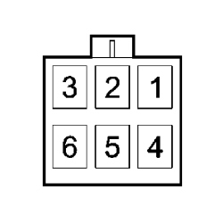

2127OL GEAR LEVER CHECK
- Path
- Test > 21 GEARBOX UNIT > 2127 ELECTRO-HYDRAULIC SELECTION GEARBOX EXTERNAL CONTROLS > 2127O ELECTROHYDRAULIC SELECTION GEARBOX EXTERNAL CONTROLS TESTS > 2127OL GEAR LEVER CHECK
- Kind
- test / check procedure
- Applies to
- engines: 2.2 JTS; all production periods; only with equipment: Smart gearbox
- Interactive page
- https://sloeber94.github.io/elrnDB-aBrrSpdr/en/#/946004575
Applies to: engines: 2.2 JTS; all production periods
STEP | CHECK TO BE PERFORMED | REMEDIAL ACTION IF THE CHECK IS NOT OK |
|---|---|---|
1 | Checking the gear lever Press the Start/Stop button Connect the Examiner diagnostic equipment and select the "LEVER STATUS" display. Carry out all the possible selections using the gear lever checking that the change is status on the Examiner is correct; the list of selections to be made is as follows: - Lever in neutral (N) (stable position) - Lever in reverse (R) (stable position) - Lever released (stable position) - With the lever in this position (check the status using the Examiner) it is possible to access the following selections: - Lever in Up position (+) (forwards) (unstable position) - Lever in Down position (-) (forwards) (unstable position) - Select Auto mode. | Move on to Step 2 |
2 | Checking selector lever operation Check the voltages at the respective gearbox control unit pins against the values in the attached table for each selector lever position Move on to Step 3 | Replace selector lever Op. 2127A12 HAND LEVER FOR MANUAL GEARBOX WITH HYDRAULIC SELECTION - R.R. If ok, restore wiring Replace the robotized gearbox control unit Op. 2127E10 HYDRAULIC SPEED SELECTION SYSTEM CONTROL UNIT - R.R. |
3 | Check the wiring Check wiring continuity between the robotized gearbox control control unit and the selector lever. Move on to Step 4. | Restore the continuity/insulation for the wiring if OK, replace the robotized gearbox control unit Op. 2127E10 HYDRAULIC SPEED SELECTION SYSTEM CONTROL UNIT - R.R. |
4 | Check on +15 power supply Press the Start/Stop button Check that the voltage between selector lever pin 6 and earth is around 12 Volts Move on to Step 5. | Replace the 15A fuse F24 after having identified the cause of malfunction. Restore correct power supply Restore the continuity/insulation for the wiring |
5 | Checking the gear lever earth Press the Start/Stop button Check that the voltage between pins 1 and 6 of the gear lever is around 12 Volt | Restore the correct continuity for the wiring. Replace the robotized gearbox control unit Op. 2127E10 HYDRAULIC SPEED SELECTION SYSTEM CONTROL UNIT - R.R. |
Gear lever output voltage combinations | ||||
Lever position | Lever (GSL0) pin 2 Gearbox control unit pin 12 | Lever (GSL1) pin 4 Gearbox control unit pin 11 | Pin 5 (GSL2) Gearbox control unit pin 7 | Pin 3 (GSL3) Gearbox control unit pin 16 |
No power supply | 1 | 1 | 1 | 1 |
Auto (intermediate position between + and -) | 0 | 1 | 0 | 1 |
+ | 0 | 1 | 0 | 1 |
- | 1 | 0 | 1 | 0 |
N | 1 | 0 | 0 | 1 |
R | 1 | 1 | 0 | 0 |
A | 0 | 1 | 1 | 0 |
NAA (intermediate position between N and R) | 0 | 0 | 0 | 0 |
Voltage level 0 = 1.5 Volts
Voltage level 1 = 3.3 Volts

Gear lever connector
Pin | Function |
|---|---|
1 | Earth |
2 | GSL0 signal |
3 | GSL3 signal |
4 | GSL1 signal |
5 | GSL2 signal |
6 | +15 Power supply |
Topics linked from this page (3)
- 2127A12 HAND LEVER FOR MANUAL GEARBOX WITH HYDRAULIC SELECTION - R.R.
- 2127E10 HYDRAULIC SPEED SELECTION SYSTEM CONTROL UNIT - R.R.
- E7051 ROBOTIZED GEARBOX